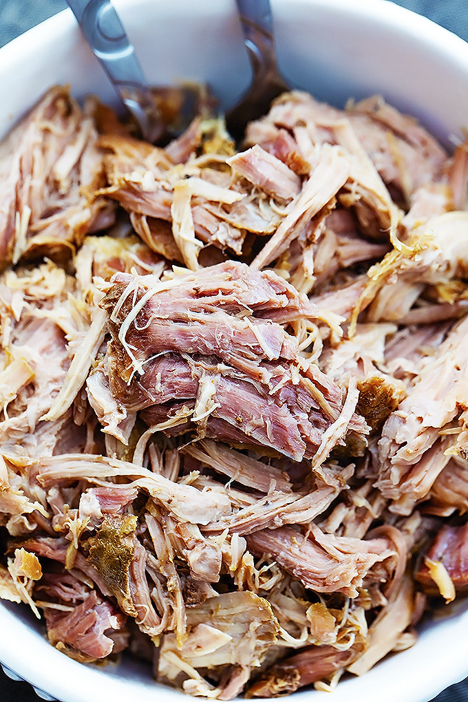

This is the Tangaroa Cafe's Menu page! Here, you'll find all the dishes we serve, and you can use this to plan ahead, so we can make sure your service is a fast as possible, so you have more time to sit and relax while on your lunch break!
Of course, Polynesia being so free on the waves, they didn't spend their time alone. No, they went exploring! They were explored themselves, as shown by the influence of foreign cultures like China, Portugal, and Japan! This section of our menu features imported tastes!
Every culture cuisine has its own set of appetizers, and Polynesia was no different! Using both local delicacies and imported recipes, the Polynesian islands had a good selection of healthy appetizers for their meals!


The scorching heat of the Sun (or at least, the heat of the office workday) can cause anyone to work up a sweat. The Tangaroa Cafe offers a variety of beverages fit for the whole family!

Of course, for the adults out there looking for a good afternoon watching the Sunset, these alcoholic drinks should offer a unique twist to your evening!